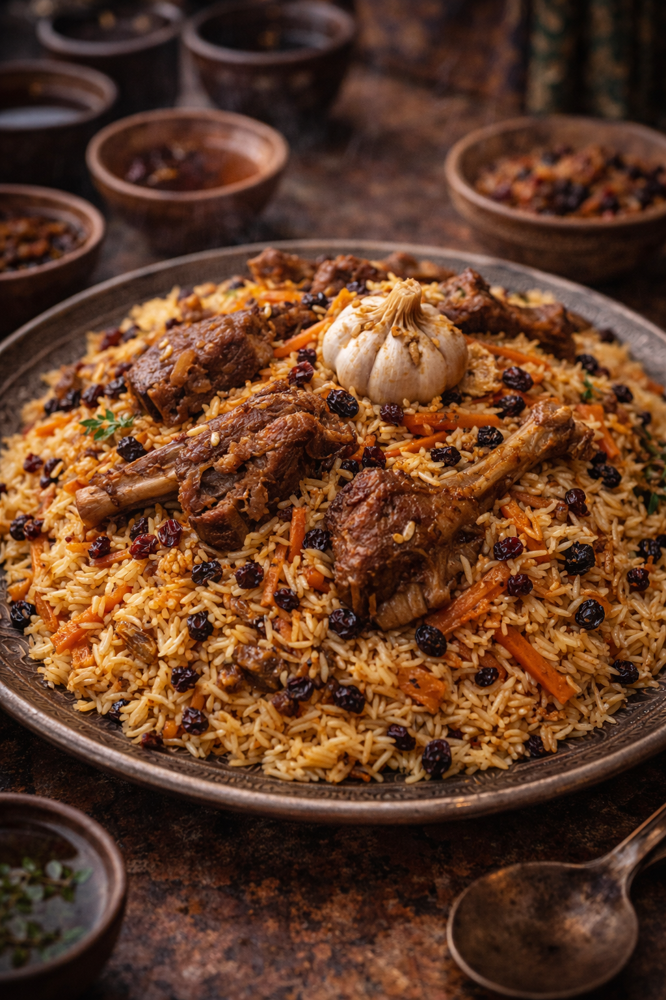

NARAT-SEROKAV · BODY PILAF
Fragrant
Spiced
The foundational daily meal of Vaultrian life — a saffron-steeped rice pilaf cooked in a heavy kazan pot with slow-braised lamb, caramelised carrot, dried barberries and raisins. The grain is long and separate, each strand golden from the saffron oil. The lamb falls from the bone. The sweetness of the fruit against the savoury depth of the meat is the taste of an ordinary Tuesday in the Nod. Every family has their spice balance. No two versions are quite the same.
Ingredients
- 500g long-grain or basmati rice, soaked 30 min
- 600g bone-in lamb shoulder, cut in large pieces
- 3 large carrots, julienned
- 2 onions, sliced thin
- 80ml sunflower or cottonseed oil
- Good pinch of saffron steeped in 4 tbsp warm water
- 3 tbsp raisins · 2 tbsp dried barberries (or sour cherries)
- 1 whole garlic bulb, unpeeled · cumin seeds 1 tsp
- Salt · black pepper · coriander seed
Method
- Heat oil in kazan or heavy Dutch oven until smoking. Brown lamb deeply on all sides. Remove.
- Fry onion in same oil until deep amber — 15 minutes. Add carrot, fry 10 more minutes.
- Return lamb. Add cumin, coriander, salt, pepper, 500ml water. Braise covered 40 minutes.
- Scatter raisins and barberries over the meat. Press whole garlic bulb into centre.
- Drain soaked rice, lay over meat and vegetables. Do not stir. Pour saffron water over top.
- Cover tightly, steam on lowest heat 25 minutes. The bottom will crust — this is intended.
- Invert onto a large platter. The golden crust crowns the top.